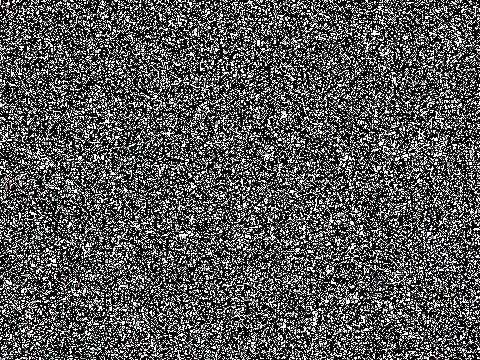

Week 1: ATLAS A
Made using Three.JS. Contains 5 separate scenes, each with a different ATLAS A. Additionally, most of the scenes are animated or interactive:
- Scene #1: Space: Moon-cubes float
- Scene #2: Wireframe: The shared material changes over time
- Scene #3: Pyramids: Nothing (yet!)
- Scene #4: Metal: Metal gets "polished" by the cursor to become more mirror-like
- Scene #5: Glowing Shapes: Clicking an object changes its shape/color
